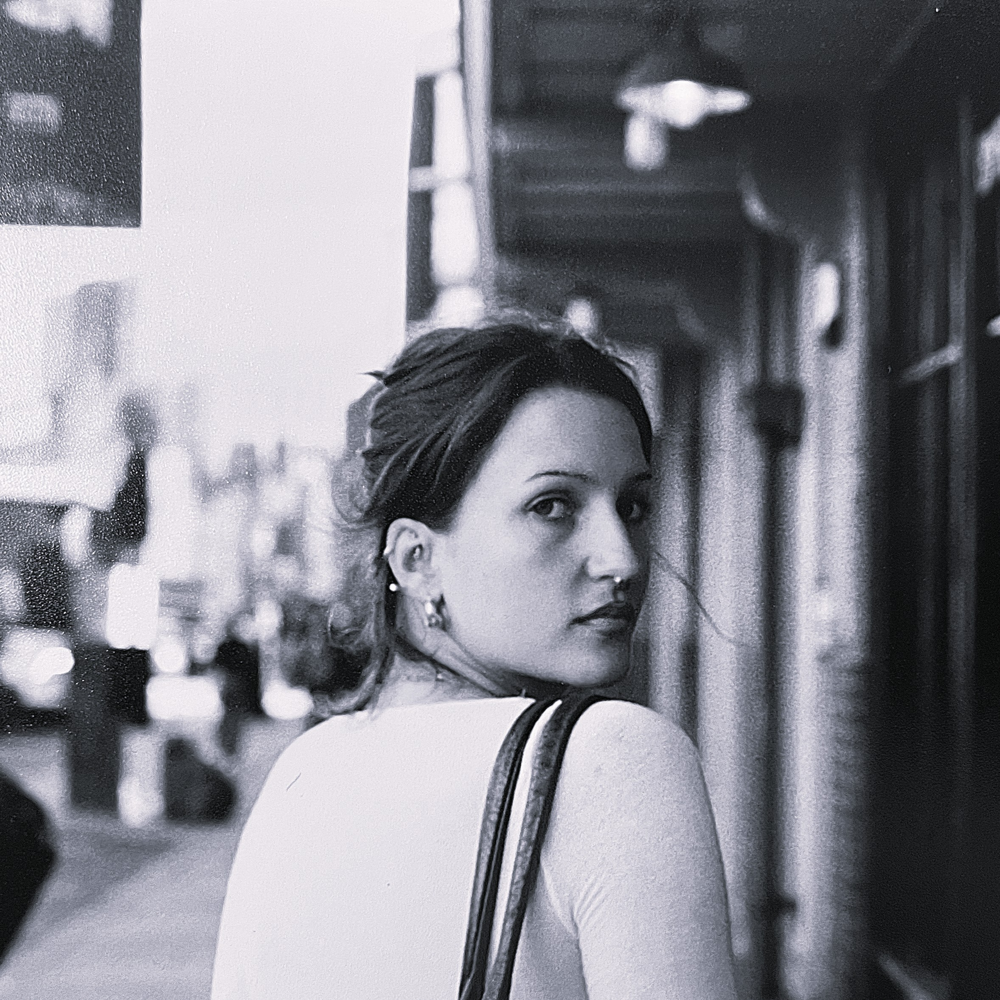

I am an Editorial Intern at St. Louis Magazine, where I cover arts and culture. I am currently a rising senior at The New School in Manhattan, studying Journalism and Design with a minor in Politics.
Before transferring to The New School, I studied Fashion Design at Parsons School of Design for a year and a half. This experience gave me a creative foundation across a range of disciplines, including video production, graphic design, technical sewing and drawing. In 2025, I also wrote for the features desk at The New School Free Press.
I recently completed a semester abroad at King's College London, where I studied Politics, Media and Culture. My interests as a journalist centre on the relationship between politics, culture and everyday life. I enjoy exploring a wide range of subjects and believe in the power of thoughtful storytelling, with journalistic ethics and integrity at the centre of my work.
Recent Stories
Collected Stories
A curated selection of work that highlights reporting, research, interviewing, and storytelling.
Expertise
- Editorial writing, news writing, feature writing
- Interviewing
- Fact-checking
- Research including FOIA and public databases
- Strong grasp of current events and politics
Tools & Software
- Adobe Creative Suite
- Datawrapper and Figma
- Microsoft Word
- Google Workspace
- Social media content creation
- Slack
- WordPress
Contact
New York, NY, 10009
+1 (314) 440-3239
Email — charlieblasingame9@gmail.com
LinkedIn ~ @charlie-blasingame
Substack — @charlieblasingame